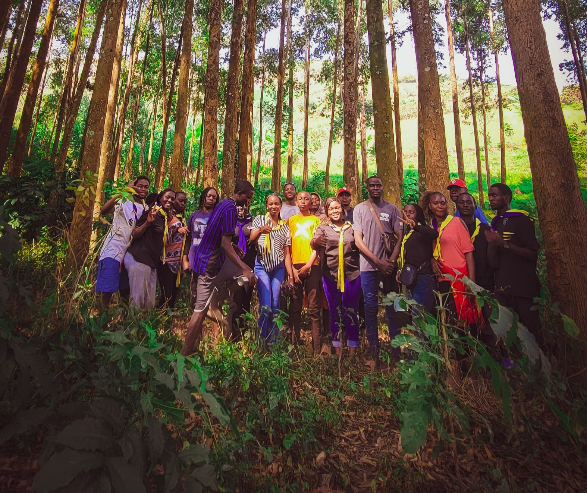

Pour cette année 2025-2026 La recollection du temps de l'avent s'était deroulée dans le quartier Lac VERT à Boscolac et était animée par le salésien Abbé Alexis et comme jeunes chrétiens ils ont parler de la naissance de Jésus dans le coeur humble comme la grotte de Bethlehem.

La recollection de carême les ADS se sont reunis à la paroisse Sainte Therese de l'enfant Jésus à Kanyarutshinya et elle était animée par le Salesien Abbé ... et ont parler de la relation entre un vrai ADS et Jésus dans la société actuelle qui est sans confiance et sans pilier moral.

Pour ce temps de grandes vacances en RDC, il était organisé le camps de formation à minova qui s'était deroulé du 5 au 10 août 2026 à l'Ecole Primaire SHANGA.
Cette activité de camps qui est comme une retraite est un temps qui rappelle à chaque ADS qu'à un temps, comme Jésus, il doit parfois quitter son lieu habituel et aller dans un lieu desert pour prier.
Et par cela faire une rencontre personnelle avec Dieu et aussi avoir la grâce d'ameliorer pendant ce temps la troisième résolution de Dominique Savio qui consiste à avoir Jésus et Marie pour Amis.

Visitez notre page facebook